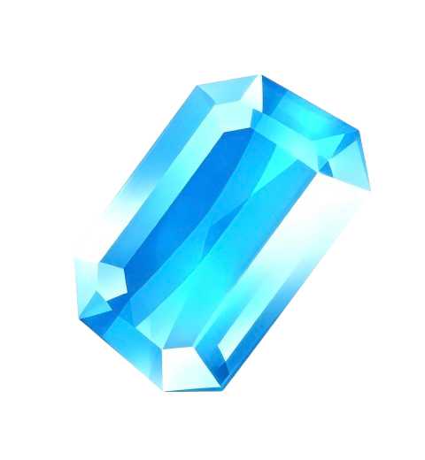
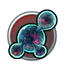

预测光元收益 · 人间体查询
按日期跨度测算各类产出的收益总量，内置每日／月总量／军械箱／每周固定／循环签到等多种算法，支持氪金开关与收益占比环形图。
完整收录131 位人间体：本命、获得方式、前置要求、特训所需人间体，支持点击名称互跳与反向查询，快速看清相互关系。

新增「奥系人间体大全」查询页，收录 4 大阵营共 131 位人间体
签到改为 30 天循环签到，支持按月、跨月乃至半年窗口预测
「维护」改为每周二发放；新增「小联赛竞猜」；收益占比图例优化
界面紧凑化重构，新增收益占比环形图
支持安装到手机主屏，并可离线使用